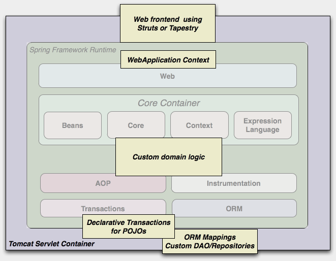
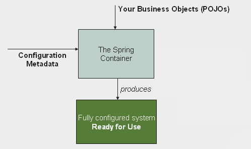
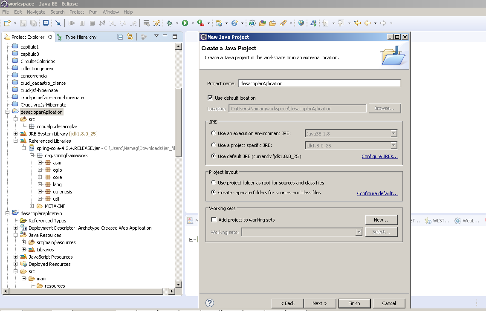
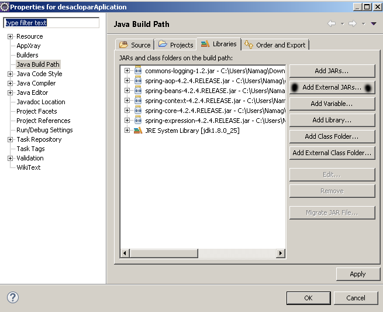
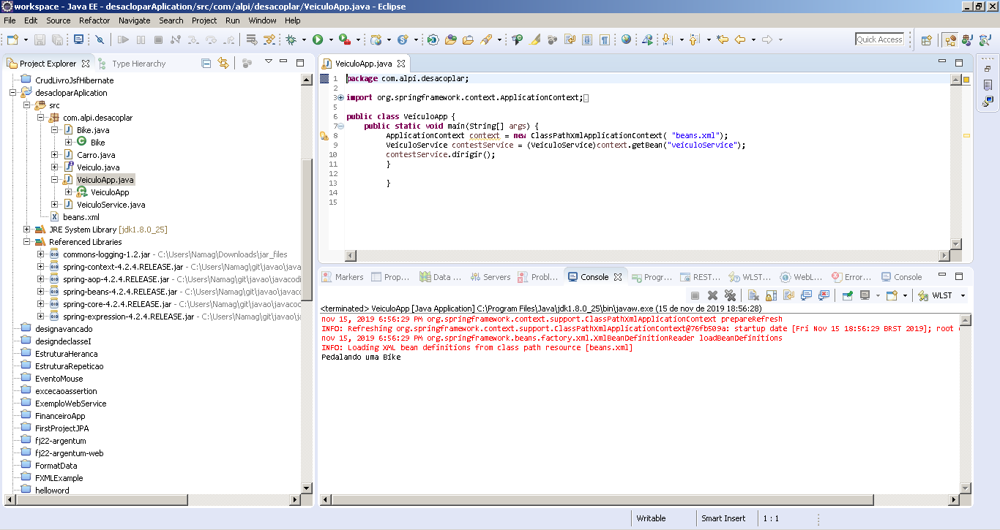
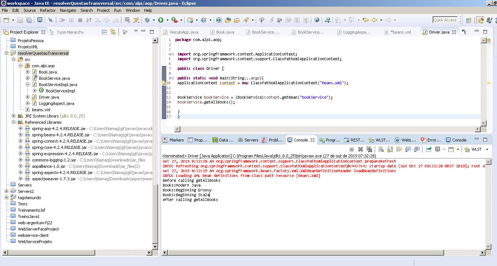
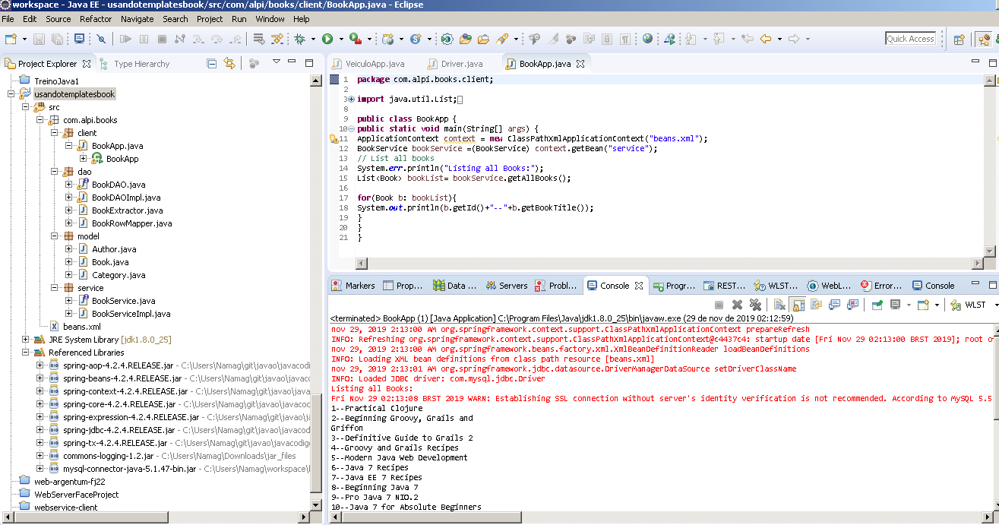

JAVA EE 7
Construindo aplicativos da Web com o Spring Web MVC
O Spring Framework cresceu e se tornou um ecossistema de projetos; inclui muitos módulos distintos, integra inúmeras estruturas e bibliotecas e fornece uma gama variada de recursos em diversas áreas, como Flash, aplicativos corporativos, serviços da Web, armazenamentos de dados, OSGi e até .NET.
Os aplicativos Spring são suportados em todas as plataformas de nuvem populares, como Cloud Foundry, Google App Engine e Amazon EC2, e podem alavancar RDBMSs tradicionais, bem como novas soluções NoSQL e armazenamentos de dados como PostgreSQL, MySQL, MongoDB e Redis. Ao contrário de muitas outras estruturas, como o Struts, que se limita ao desenvolvimento de aplicativos da Web, o Spring Framework pode ser usado para criar aplicativos independentes, da Web e JEE. O Spring fornece suporte para a criação de aplicativos Web modernos, incluindo REST, HTML5 e Ajax, bem como plataformas de clientes móveis, incluindo Android e iPhone. O Spring Framework mudou notavelmente o cenário Java corporativo para sempre, conectando componentes aos sistemas para que você não precise escrever o código do encanamento, permitindo que você se concentre nos negócios do aplicativo.
Todos os códigos apresentado estão no reposítorio do github e poderão ser acessado através do link no final da página.
Spring Framework Visão Geral
O Spring Framework consiste em recursos organizados em cerca de 20 módulos. Esses módulos são agrupados em Container Principal, Acesso / Integração de Dados, Web, AOP (Programação Orientada a Aspectos), Instrumentação, Mensagens e Teste, conforme mostrado no diagrama a seguir.
O Spring Framework consiste de recursos nestas categorias:
- Integração/Acesso a Dados
- Web
- AOP , Aspectos, Instrumentação, Mensagens
- Core container
- Test
Os módulos em cada categoria são descrevidos nas seções seguintes.
AOP e Instrumentação
A categoria AOP e instrumentação consiste nos módulos AOP, Aspectos , Instrumentação e Mensagens, conforme descrito na tabela a seguir.
| Módulo | Descrição |
|---|---|
| AOP | O módulo fornece uma implementação de programação orientada a aspectos compatível com a AOP Alliance, permitindo definir, por exemplo, interceptadores de métodos e cortes de pontos para desacoplar de maneira limpa o código que implementa a funcionalidade que deve ser separada. Usando a funcionalidade de metadados no nível da fonte, você também pode incorporar informações comportamentais ao seu código, de maneira semelhante à dos atributos do .NET. |
| Spring-Aspects | O módulo Aspect fornece integração com o AspectJ |
| Spring-Instrumentação | O módulo Instrumentação fornece suporte para instrumentação de classe e implementações de carregador de classe |
| spring-tomcat | O módulo contém o agente de instrumentação da Spring para o Tomcat. |
Core Container
O Core Container consiste nos módulos spring-core, spring-beans, spring-context, spring-context-support e spring-expression (Spring Expression Language).
| Modulo | Descrição |
|---|---|
| Beans | O módulo Beans fornece recursos de IoC e injeção de dependência. |
| Core | O módulo Core fornece recursos de IoC e injeção de dependência |
| Context | O módulo Context baseia-se nos módulos Core e Beans e inclui suporte para internacionalização, propagação de eventos, carregamento de recursos, EJB e JMX. |
| Expression Language | O módulo Expression Language fornece Linguagem de expressão Spring |
O módulo spring-expression fornece uma linguagem de expressão poderosa para consultar e manipular um gráfico de objetos em tempo de execução. É uma extensão da linguagem de expressão unificada (EL unificado), conforme especificado na especificação JSP 2.1. O idioma suporta a configuração e a obtenção de valores de propriedade, atribuição de propriedade, invocação de método, acesso ao conteúdo de arrays, coleções e indexadores, operadores lógicos e aritméticos, variáveis nomeadas e recuperação de objetos por nome do contêiner IoC do Spring. Ele também suporta projeção e seleção de listas, bem como agregações de listas comuns.
A interface ApplicationContext é o ponto focal do módulo Context. O spring-context-support fornece suporte para integrar bibliotecas comuns de terceiros em um contexto de aplicativo Spring para cache (EhCache, Guava, JCache), mailing (JavaMail), agendamento (CommonJ, Quartz) e mecanismos de modelo (FreeMarker, JasperReports, Velocity) .
Integração/Acessa Dados
A camada de acesso/integração de dados consiste nos módulos JDBC, ORM, OXM, JMS e Transaction, conforme descrito na tabela:
| Modulos | Descrição |
|---|---|
| JDBC | O módulo JDBC fornece uma camada de abstração JDBC que elimina a necessidade de usar JDBC puro. |
| ORM | O módulo ORM fornece integração para estruturas ORM, como JPA, JDO, Hibernate e iBatis |
| OXM | O módulo OXM suporta implementações de mapeamento de objeto/XML para JAXB, Castor, XMLBeans, JiBX e XStream. |
| JMS | O módulo JMS fornece recursos para produção e consumo de mensagens. |
| Transaction | O módulo Transação suporta gerenciamento de transações programática e declarativa. |
| Mensagem | O módulo spring-jms (Java Messaging Service) contém recursos para produzir e consumir mensagens. Desde o Spring Framework 4.1, ele fornece integração com o módulo de mensagens do spring. |
Mensagens
O Spring Framework 4 inclui um módulo de mensagens do spring com abstrações importantes do projeto Spring Integration, como Message, MessageChannel, MessageHandler e outros, para servir como base para aplicativos baseados em mensagens. O módulo também inclui um conjunto de anotações para mapear mensagens para métodos, semelhante ao modelo de programação baseado em anotação do Spring MVC.
Test
A categoria de teste consiste no módulo Teste, conforme descrito na Tabela:
| Modulos | Descrição |
|---|---|
| Test | O módulo Teste suporta o teste de componentes Spring com JUnit ou TestNG |
Web
A camada da web consiste nos módulos Web, Web-Servlet, Web-Struts e Web-Portlet, conforme descrito na Tabela.
| Modulo | Descrição |
|---|---|
| Web | O módulo Web da Spring fornece recursos básicos de integração orientada para a Web e um contexto de aplicativo orientado para a Web. Ele também fornece várias opções de comunicação remota, como RMI (Remote Method Invocation), Hessian, Burlap, JAX-WS e o próprio invocador HTTP da Spring |
| Web-Servlet | O módulo Web-Servlet contém a implementação do MVC (Model-View-Controller) da Spring para aplicativos da Web |
| Spring/Struts | O módulo Web-Struts fornece suporte para integrar uma camada da Web clássica do Struts em um aplicativo Spring. Observe que esse suporte agora está obsoleto a partir do Spring 3.0 . Para integrar o spring com strus visite está página ->https://struts.apache.org/plugins/spring/ |
| Web-Portlet | O módulo Web-Portlet fornece a implementação MVC a ser usada em um ambiente de portlet. |
O núcleo do Spring Framework é baseado no princípio de Inversão de Controle (IoC), que fornece injeção de dependências. No entanto, o Spring não é a única estrutura que oferece recursos de injeção de dependência; existem várias outras estruturas, como Seam, Google Guice e JEE6 e mais recentes, que oferecem injeção de dependência.
Spring Framework Fundamental
Este guia de referência fornece informações detalhadas sobre o Spring Framework. Ele fornece documentação abrangente para todos os recursos, bem como alguns antecedentes sobre os conceitos subjacentes (como "Injeção de Dependências") adotados pelo Spring.
Se você está apenas começando o Spring, pode querer começar a usar o Spring Framework criando um aplicativo baseado no Spring Boot. O Spring Boot fornece uma maneira rápida (e opinativa) de criar um aplicativo Spring pronto para produção. Ele é baseado no Spring Framework, favorece as convenções sobre a configuração e foi projetado para colocar você em funcionamento o mais rápido possível.
Você pode usar o start.spring.io para gerar um projeto básico ou seguir um dos guias "Introdução", como o Guia de introdução à Criação de um serviço da Web RESTful. Além de serem mais fáceis de digerir, esses guias são muito focados em tarefas e a maioria deles é baseada no Spring Boot. Eles também abrangem outros projetos do portfólio Spring que você pode considerar ao resolver um problema específico.
Um aplicativo é composto de componentes como componentes da Web e componentes de lógica de negócios. Esses componentes precisam colaborar entre si para cumprir os objetivos comerciais comuns do aplicativo, para que esses componentes dependam um do outro. Essa dependência, se não controlada, geralmente leva a um acoplamento rígido entre eles, resultando em um aplicativo não sustentável. Controlar esse acoplamento para que não resulte em um aplicativo fortemente acoplado é uma tarefa não trivial. Por outro lado, se um componente do aplicativo não depender de outro componente, ele não precisará procurá-lo, todos os componentes serão totalmente isolados e o aplicativo resultante será fracamente acoplado. Mas esse aplicativo não fará nada. Essencialmente, os componentes devem depender de outros componentes, mas não devem procurar esses componentes dos quais dependem. Em vez disso, essas dependências devem ser fornecidas aos componentes dependentes. Essa é a essência da inversão de controle. O Spring Framework é um desses framework IoC, que fornece as dependências para os componentes dependentes por meio de injeção de dependência.
Spring Framework é uma plataforma Java que fornece suporte abrangente à infraestrutura para o desenvolvimento de aplicativos Java. O Spring lida com a infraestrutura para que você possa se concentrar no seu aplicativo.
O Spring permite criar aplicativos a partir de "objetos Java simples e simples" (POJOs são objetos Java que seguem um desenho simplificado em contraposição aos EJBs, por exemplo. Um JavaBean é um POJO que segue definições rígidas de estrutura (construtor default sem argumentos e métodos que seguem o padrão de getters e setters para seus atributos) ) e aplicar serviços corporativos de maneira não invasiva aos POJOs. Esse recurso se aplica ao modelo de programação Java SE e ao Java EE completo e parcial.
Exemplos de você como desenvolvedor de aplicativos, pode se beneficiar da plataforma Spring:
- Execute um método Java em uma transação de banco de dados sem precisar lidar com APIs de transação.
- Torne um método Java local um procedimento remoto sem precisar lidar com APIs remotas.
- Torne um método Java local uma operação de gerenciamento sem precisar lidar com APIs JMX.
- Torne um método Java local um manipulador de mensagens sem precisar lidar com APIs JMS.
Injeção de Dependência e Inversão de Controle
Um aplicativo Java - um termo genérico que executa toda a gama de aplicativos incorporados restritos a aplicativos corporativos do servidor de n camadas, geralmente consiste em objetos que colaboram para formar o aplicativo adequadamente. Assim, os objetos em um aplicativo têm dependências um do outro.
Embora a plataforma Java forneça uma grande variedade de funcionalidades de desenvolvimento de aplicativos, ela não possui os meios para organizar os blocos de construção básicos em um todo coerente, deixando essa tarefa para arquitetos e desenvolvedores. Embora você possa usar padrões de design como Factory, Abstract Factory, Builder, Decorator e Service Locator para compor as várias classes e instâncias de objetos que compõem um aplicativo, esses padrões são simplesmente os seguintes: práticas recomendadas nomeadas, com uma descrição de o que o padrão faz, onde aplicá-lo, os problemas que ele aborda etc. Padrões são práticas recomendadas formalizadas que você deve implementar em seu aplicativo.
O componente Spring Framework Inversion of Control (IoC) aborda essa preocupação, fornecendo um meio formalizado de compor componentes díspares em um aplicativo totalmente funcional, pronto para uso. O Spring Framework codifica os padrões de design formalizados como objetos de primeira classe que você pode integrar aos seus próprios aplicativos. Várias organizações e instituições usam o Spring Framework dessa maneira para projetar aplicativos robustos e de manutenção.
Cenários
Os blocos de construção descritos anteriormente tornam o Spring uma escolha lógica em muitos cenários, desde aplicativos incorporados executados em dispositivos com recursos limitados até aplicativos corporativos completos que usam a funcionalidade de gerenciamento de transações do Spring e a integração da estrutura da web.

Os recursos declarativos de gerenciamento de transações da Spring tornam o aplicativo Web totalmente transacional, exatamente como seria se você usasse transações gerenciadas por contêiner EJB. Toda a sua lógica de negócios personalizada pode ser implementada com POJOs simples e gerenciada pelo contêiner de IoC da Spring. Os serviços adicionais incluem suporte ao envio de email e validação independente da camada da web, que permite escolher onde executar as regras de validação. O suporte ORM do Spring é integrado ao JPA, Hibernate e JDO; por exemplo, ao usar o Hibernate, você pode continuar usando os arquivos de mapeamento existentes e a configuração padrão do Hibernate SessionFactory. Os controladores de formulário integram perfeitamente a camada da web ao modelo de domínio, eliminando a necessidade de ActionForms ou outras classes que transformam parâmetros HTTP em valores para o seu modelo de domínio.
A imagem abaixo representa a Camada intermediária do Spring usando uma estrutura da web de terceiros

Às vezes, as circunstâncias não permitem que você alterne completamente para uma estrutura diferente. O Spring Framework não força você a usar tudo dentro dele; não é uma solução do tipo tudo ou nada. Os front-ends existentes criados com Struts, Tapestry, JSF ou outras estruturas de interface do usuário podem ser integrados a uma camada intermediária baseada no Spring, que permite usar os recursos de transação do Spring. Você só precisa conectar sua lógica de negócios usando um ApplicationContext e um WebApplicationContext para integrar sua camada da web.
Convenções de gerenciamento de dependência e nomeação
Gerenciamento de dependência e injeção de dependência são coisas diferentes. Para obter esses recursos interessantes do Spring em seu aplicativo (como injeção de dependência), você precisa reunir todas as bibliotecas necessárias (arquivos jar) e colocá-las no caminho de classe em tempo de execução e, possivelmente, em tempo de compilação. Essas dependências não são componentes virtuais injetados, mas recursos físicos em um sistema de arquivos (normalmente). O processo de gerenciamento de dependências envolve localizar esses recursos, armazená-los e adicioná-los aos caminhos de classe. Dependências podem ser diretas (por exemplo, meu aplicativo depende do Spring em tempo de execução) ou indiretas (por exemplo, meu aplicativo depende do commons-dbcp, que depende do commons-pool). As dependências indiretas também são conhecidas como "transitivas" e são as dependências que são mais difíceis de identificar e gerenciar.
Se você for usar o Spring, precisará obter uma cópia das bibliotecas jar que compreendem as partes do Spring necessárias. Para facilitar isso, o Spring é compactado como um conjunto de módulos que separam as dependências o máximo possível. Por exemplo, se você não deseja gravar um aplicativo da Web, não precisa dos módulos do Spring. Para consultar os módulos da biblioteca Spring neste guia, usamos uma convenção de nomenclatura abreviada spring-* ou spring-*.jar, onde * representa o nome abreviado do módulo (por exemplo, spring-core, spring-webmvc, spring-jms, etc. ) O nome real do arquivo jar que você usa normalmente é o nome do módulo concatenado com o número da versão (por exemplo, spring-core-4.2.9.RELEASE.jar).
Cada versão do Spring Framework publicará artefatos nos seguintes locais:
- Maven Central, que é o repositório padrão que o Maven consulta e não requer nenhuma configuração especial para usar. Muitas das bibliotecas comuns das quais o Spring depende também estão disponíveis no Maven Central e uma grande parte da comunidade do Spring usa o Maven para gerenciamento de dependências, portanto, isso é conveniente para eles. Os nomes dos jars aqui estão no formato spring-*-< versão >.jar e o Maven groupId é org.springframework.
- Em um repositório público do Maven hospedado especificamente para o Spring. Além das versões finais do GA, este repositório também hospeda milestone ou snapshots(instantâneos) de desenvolvimento. Os nomes dos arquivos jar estão na mesma forma que o Maven Central, portanto, este é um local útil para obter versões de desenvolvimento do Spring para uso com outras bibliotecas implantadas no Maven Central. Este repositório também contém um arquivo zip de distribuição de pacote configurável que contém todos os jars Spring agrupados para facilitar o download.
Portanto, a primeira coisa que você precisa decidir é como gerenciar suas dependências: geralmente recomendamos o uso de um sistema automatizado como Maven(utilizaremos esse), Gradle ou Ivy, mas você também pode fazê-lo manualmente fazendo o download de todos os jars.
Logo abaixo a tabela mostra os artefatos do Spring Framework
| Grupo Id | ArtifactId | Descrição |
|---|---|---|
| org.springframework | spring-aop | Suporte AOP baseado em Proxy |
| org.springframework | spring-aspects | AspectJ com base em aspectos |
| org.springframework | spring-beans | Supore Beans, incluindo Groovy |
| org.springframework | spring-contex | Tempo de execução do contexto do aplicativo, incluindo agendamento e abstrações remotas |
| org.springframework | spring-context-support | Suporte a classes para integrar bibliotecas comuns de terceiros em um contexto de aplicativo Spring |
| org.springframework | spring-core | Utilitários principais, usados por muitos outros módulos Spring |
| org.springframework | spring-expression | Spring Expression Language (SpEL) |
| org.springframework | spring-instrument | Instrumentation agent for JVM bootstrapping |
| org.springframework | spring-instrument-tomcat | Instrumentation agent for Tomcat |
| org.springframework | spring-jdbc | Pacote de suporte JDBC, incluindo configuração de DataSource e suporte a acesso JDBC |
| org.springframework | spring-jms | Pacote de suporte JMS, incluindo classes auxiliares para enviar e receber mensagens JMS |
| org.springframework | spring-messaging | Suporte para arquiteturas e protocolos de mensagens |
| org.springframework | spring-orm | Mapeamento de Objeto / Relacional, incluindo suporte a JPA e Hibernate |
| org.springframework | spring-oxm | Mapeamento de Objetos / XML |
| org.springframework | spring-test | Suporte para teste de unidade e teste de integração de componentes Spring |
| org.springframework | spring-tx | Infraestrutura de transação, incluindo suporte a DAO e integração JCA |
| org.springframework | spring-web | Pacotes de suporte da Web, incluindo comunicação remota com cliente e Web |
| org.springframework | spring-webmvc | Serviços da Web REST e implementação de controlador de exibição de modelo para aplicativos da web |
| org.springframework | spring-webmvc-portlet | Implementação do MVC a ser usada em um ambiente de Portlet |
| org.springframework | spring-websocket | Implementações WebSocket e SockJS, incluindo suporte a STOMP |
Dependências do Spring e Dependendo do Spring
Embora o Spring forneça integração e suporte para uma grande variedade de ferramentas corporativas e outras ferramentas externas, ele intencionalmente mantém suas dependências obrigatórias em um mínimo absoluto: você não precisa localizar e fazer download (mesmo automaticamente) de um grande número de bibliotecas jar para poder use Spring para casos de uso simples. Para injeção de dependência básica, existe apenas uma dependência externa obrigatória e é para registro em log (veja abaixo uma descrição mais detalhada das opções de registro).
A seguir, descrevemos as etapas básicas necessárias para configurar um aplicativo que depende do Spring com o Maven . Em todos os casos, se algo não estiver claro, consulte a documentação do seu sistema de gerenciamento de dependências ou observe algum código de amostra - o Spring propriamente usa o Gradle para gerenciar dependências quando está construindo, e nossos exemplos usamos principalmente o Maven.
Se você estiver usando o Maven para gerenciamento de dependências, não precisará fornecer explicitamente a dependência de log. Por exemplo, para criar um contexto de aplicativo e usar injeção de dependência para configurar um aplicativo, suas dependências do Maven terão a seguinte aparência:
org.springframework spring-context 4.2.9.RELEASE runtime
É isso aí. Observe que o escopo pode ser declarado como tempo de execução, se você não precisar compilar com as APIs do Spring, que normalmente é o caso dos casos de uso básicos de injeção de dependência. O exemplo acima funciona com o repositório Maven Central. Para usar o repositório Spring Maven (por exemplo, para milestone ou snapshots de desenvolvedor), você precisa especificar o local do repositório na sua configuração do Maven. Para lançamentos completos:
io.spring.repo.maven.release http://repo.spring.io/release/ false
Para milestones:
io.spring.repo.maven.milestone http://repo.spring.io/milestone/ false
E para snapshots:
io.spring.repo.maven.snapshot http://repo.spring.io/snapshot/ true
Dependência da "Lista de materiais" do Maven
É possível misturar acidentalmente diferentes versões dos JARs do Spring ao usar o Maven. Por exemplo, você pode achar que uma biblioteca de terceiros, ou outro projeto Spring, gera uma dependência transitiva para uma versão mais antiga. Se você esquecer de declarar explicitamente uma dependência direta, todos os tipos de problemas inesperados poderão surgir.
Para superar esses problemas, o Maven apóia o conceito de dependência da "lista de materiais" (BOM). Você pode importar o spring-framework-bom na seção dependencyManagement para garantir que todas as dependências do spring (diretas e transitivas) estejam na mesma versão.
org.springframework spring-framework-bom 4.2.9.RELEASE pom import
Um benefício adicional do uso da BOM é que você não precisa mais especificar o atributo < versão > quando depende dos artefatos do Spring Framework:
org.springframework spring-context org.springframework spring-web
Arquivos zip de distribuição
Embora o uso de um sistema de compilação que suporte o gerenciamento de dependências seja a maneira recomendada de obter o Spring Framework, ainda é possível fazer o download de um arquivo zip de distribuição.
Os zips de distribuição são publicados no Repositório do Spring Maven (isso é apenas para nossa conveniência, você não precisa do Maven ou de qualquer outro sistema de compilação para fazer o download).
Para baixar um zip de distribuição, abra um navegador da web em http://repo.spring.io/release/org/springframework/spring e selecione a subpasta apropriada para a versão que você deseja. Os arquivos de distribuição finalizam -dist.zip, por exemplo, spring-framework-{spring-version}-RELEASE-dist.zip. Também são publicadas distribuições para marcos e capturas instantâneas.
Log
O registro em log é uma dependência muito importante para o Spring porque:
- é a única dependência externa obrigatória;
- todo mundo gosta de ver alguma saída das ferramentas que está usando;
- o Spring se integra a muitas outras ferramentas que também foram criadas uma opção de dependência de log.
Um dos objetivos de um desenvolvedor de aplicativos geralmente é ter o log unificado configurado em um local central para todo o aplicativo, incluindo todos os componentes externos. Isso é mais difícil do que poderia ter sido, pois existem muitas opções de estrutura de log.
A dependência de registro obrigatória no Spring é a Jakarta Commons Logging API(JCL). Compilamos o JCL e também tornamos os objetos de log da JCL visíveis para classes que estendem o Spring Framework. É importante para os usuários que todas as versões do Spring usem a mesma biblioteca de log: a migração é fácil porque a compatibilidade com versões anteriores é preservada, mesmo com aplicativos que estendem o Spring. A maneira como fazemos isso é fazer com que um dos módulos do Spring dependa explicitamente do log comum (a implementação canônica da JCL) e faça com que todos os outros módulos dependam disso no momento da compilação. Se você estiver usando o Maven, por exemplo, e se perguntando onde detectou a dependência do log comum, então é do Spring e, especificamente, do módulo central chamado spring-core.
O bom do log comum é que você não precisa de mais nada para fazer seu aplicativo funcionar. Ele possui um algoritmo de descoberta em tempo de execução que procura outras estruturas de registro em locais bem conhecidos no caminho de classe e usa uma que julga apropriada (ou você pode dizer qual, se necessário). Se nada mais estiver disponível, você obterá registros de aparência bastante agradável apenas no JDK (java.util.logging ou JUL). Você deve achar que seu aplicativo Spring funciona e efetua logon com facilidade no console imediatamente na maioria das situações, e isso é importante.
Não usando o log do Commons
Infelizmente, o algoritmo de descoberta de tempo de execução no log comum, embora conveniente para o usuário final, é problemático. Se pudéssemos voltar o relógio e iniciar o Spring agora como um novo projeto, ele usaria uma dependência de log diferente. A primeira opção provavelmente seria o SLF4J (Simple Logging Facade for Java), que também é usado por muitas outras ferramentas que as pessoas usam com o Spring em seus aplicativos.
Existem basicamente duas maneiras de desativar o log comum:
- Excluir a dependência do módulo spring-core (pois é o único módulo que depende explicitamente do log comum)
- Dependa de uma dependência especial de log comum que substitua a biblioteca por um jar vazio (mais detalhes podem ser encontrados no FAQ do SLF4J)
Para excluir o registro comum, adicione o seguinte à seção dependencyManagement:
org.springframework spring-core 4.2.9.RELEASE commons-logging commons-logging
Agora, esse aplicativo provavelmente está quebrado porque não há implementação da API JCL no caminho da classe; portanto, para corrigir, é necessário fornecer um novo. Na próxima seção, mostramos como fornecer uma implementação alternativa da JCL usando o SLF4J como exemplo.
Usando SLF4J
O SLF4J é uma dependência mais limpa e mais eficiente em tempo de execução do que o log comum, porque usa ligações em tempo de compilação em vez da descoberta em tempo de execução de outras estruturas de log integradas. Isso também significa que você precisa ser mais explícito sobre o que deseja que aconteça no tempo de execução e declará-lo ou configurá-lo de acordo. O SLF4J fornece ligações para muitas estruturas de log comuns, para que você possa geralmente escolher uma que você já usa e vincular a essa para configuração e gerenciamento.
O SLF4J fornece ligações para muitas estruturas de log comuns, incluindo JCL, e também faz o contrário: pontes entre outras estruturas de log e ele próprio. Portanto, para usar o SLF4J com o Spring, é necessário substituir a dependência do log de bens comuns pela ponte SLF4J-JCL. Depois de fazer isso, o registro de chamadas do Spring será convertido em chamadas para a API do SLF4J; portanto, se outras bibliotecas em seu aplicativo usarem essa API, você terá um único local para configurar e gerenciar o log.
Uma escolha comum pode ser conectar o Spring ao SLF4J e fornecer ligação explícita do SLF4J para o Log4J. Você precisa fornecer 4 dependências (e excluir o log comum existente): a ponte, a API SLF4J, a ligação ao Log4J e a própria implementação do Log4J. No Maven, você faria isso assim:
org.springframework spring-core 4.2.9.RELEASE commons-logging commons-logging org.slf4j jcl-over-slf4j 1.5.8 org.slf4j slf4j-api 1.5.8 < dependency> org.slf4j slf4j-log4j12 1.5.8 log4j log4j 1.2.14
Usando o Log4J
Muitas pessoas usam o Log4j como uma estrutura de registro para fins de configuração e gerenciamento. É eficiente e bem estabelecido e, de fato, é o que usamos em tempo de execução quando construímos e testamos o Spring. O Spring também fornece alguns utilitários para configurar e inicializar o Log4j, portanto, ele possui uma dependência opcional do Log4j em tempo de compilação em alguns módulos.
Para que o Log4j funcione com a dependência JCL padrão (log comum), basta colocar o Log4j no caminho de classe e fornecer um arquivo de configuração (log4j.properties ou log4j.xml na raiz do caminho de classe). Portanto, para usuários do Maven, esta é sua declaração de dependência:
org.springframework spring-core 4.2.9.RELEASE log4j log4j 1.2.14
E aqui está um exemplo de log4j.properties para fazer logon no console:
log4j.rootCategory=INFO, stdout
log4j.appender.stdout=org.apache.log4j.ConsoleAppender
log4j.appender.stdout.layout=org.apache.log4j.PatternLayout
log4j.appender.stdout.layout.ConversionPattern=%d{ABSOLUTE} %5p %t %c{2}:%L - %m%n
log4j.category.org.springframework.beans.factory=DEBUG
Introdução ao contêiner Spring IoC e beans
Esta seção aborda a implementação do Spring Framework do princípio de Inversão de controle(IoC). A IoC também é conhecida como injeção de dependência(DI). É um processo pelo qual os objetos definem suas dependências, ou seja, os outros objetos com os quais trabalham, apenas por meio de argumentos do construtor, argumentos para um método de fábrica ou propriedades que são definidas na instância do objeto após serem construídas ou retornadas a partir de um método de fábrica. O contêiner injeta essas dependências quando cria o bean. Esse processo é fundamentalmente o inverso, daí o nome Inversion of Control (IoC), do próprio bean que controla a instanciação ou localização de suas dependências usando a construção direta de classes ou um mecanismo como o padrão Service Locator.
Os pacotes org.springframework.beans e org.springframework.context são a base do contêiner de IoC do Spring Framework. A interface BeanFactory fornece um mecanismo de configuração avançado capaz de gerenciar qualquer tipo de objeto. ApplicationContext é uma sub-interface do BeanFactory. Ele adiciona uma integração mais fácil aos recursos de AOP do Spring; tratamento de recursos de mensagens (para uso em internacionalização), publicação de eventos; e contextos específicos da camada de aplicativos, como o WebApplicationContext, para uso em aplicativos da web.
Em resumo, o BeanFactory fornece a estrutura de configuração e a funcionalidade básica, e o ApplicationContext adiciona mais funcionalidades específicas da empresa. O ApplicationContext é um superconjunto completo do BeanFactory e é usado exclusivamente neste capítulo nas descrições do contêiner de IoC do Spring.
No Spring, os objetos que formam a espinha dorsal do seu aplicativo e gerenciados pelo contêiner Spring IoC são chamados de beans. Um bean é um objeto que é instanciado, montado e gerenciado por um contêiner Spring IoC. Caso contrário, um bean é simplesmente um dos muitos objetos em seu aplicativo. Os beans e as dependências entre eles são refletidos nos metadados de configuração usados por um contêiner.
Use um ApplicationContext, a menos que você tenha um bom motivo para não fazer isso. Como o ApplicationContext inclui todas as funcionalidades do BeanFactory, geralmente é recomendado sobre o BeanFactory, exceto em algumas situações, como em aplicativos incorporados em execução em dispositivos com recursos limitados, onde o consumo de memória pode ser crítico e alguns kilobytes extras podem fazer a diferença. No entanto, para os aplicativos e sistemas corporativos mais comuns, o ApplicationContext é o que você deseja usar. O Spring faz uso intenso do ponto de extensão BeanPostProcessor (para efetuar proxy e assim por diante). Se você usar apenas um BeanFactory simples, uma quantidade razoável de suporte, como transações e AOP, não entrará em vigor, pelo menos não sem algumas etapas extras de sua parte. Essa situação pode ser confusa porque nada está realmente errado com a configuração.
Container Visão geral
A interface org.springframework.context.ApplicationContext representa o contêiner Spring IoC e é responsável por instanciar, configurar e montar os beans mencionados acima. O contêiner recebe instruções sobre quais objetos instanciar, configurar e montar lendo os metadados de configuração. Os metadados de configuração são representados em XML, anotações Java ou código Java. Ele permite que você expresse os objetos que compõem seu aplicativo e as interdependências ricas entre esses objetos
Várias implementações da interface ApplicationContext são fornecidas prontas para uso com o Spring. Em aplicativos independentes, é comum criar uma instância de ClassPathXmlApplicationContext ou FileSystemXmlApplicationContext. Embora o XML tenha sido o formato tradicional para definir metadados de configuração, você pode instruir o contêiner a usar anotações ou código Java como formato de metadados, fornecendo uma pequena quantidade de configuração XML para declarar ativamente o suporte a esses formatos de metadados adicionais.
Na maioria dos cenários de aplicativos, o código explícito do usuário não é necessário para instanciar uma ou mais instâncias de um contêiner Spring IoC. Por exemplo, em um cenário de aplicativo da Web, apenas oito (mais ou menos) linhas de XML descritor da web padrão no arquivo web.xml do aplicativo normalmente são suficientes . Se você estiver usando o ambiente de desenvolvimento baseado em Eclipse do Spring Tool Suite, essa configuração padrão pode ser facilmente criada com apenas alguns cliques ou pressionamentos de tecla.
O diagrama a seguir é uma visão de alto nível de como o Spring funciona. Suas classes de aplicativos são combinadas com metadados de configuração para que, após a criação e a inicialização do ApplicationContext, você tenha um sistema ou aplicativo totalmente configurado e executável.

Metadados de configuração
Como o diagrama anterior mostra, o contêiner Spring IoC consome uma forma de metadados de configuração; esses metadados de configuração representam como você, como desenvolvedor de aplicativos, instrui o contêiner Spring a instanciar, configurar e montar os objetos em seu aplicativo.
Os metadados de configuração são tradicionalmente fornecidos em um formato XML simples e intuitivo, que é usado na maior parte desta seção para transmitir os principais conceitos e recursos do contêiner Spring IoC.
- Configuração baseada em anotações: o Spring 2.5 introduziu suporte para metadados de configuração baseados em anotações.
- Configuração baseada em Java: A partir do Spring 3.0, muitos recursos fornecidos pelo projeto Spring JavaConfig tornaram-se parte do Spring Framework principal. Assim, você pode definir beans externos para suas classes de aplicativos usando arquivos Java em vez de arquivos XML. Os novos recursos são as anotações @Configuration, @Bean, @Import e @DependsOn.
A configuração do Spring consiste em pelo menos uma e geralmente mais de uma definição de bean que o contêiner deve gerenciar. Os metadados de configuração baseados em XML mostram esses beans configurados como elementos < bean /> dentro de um elemento < beans /> de nível superior. A configuração Java normalmente usa métodos anotados @Bean dentro de uma classe @Configuration.
Essas definições de bean correspondem aos objetos reais que compõem seu aplicativo. Normalmente, você define objetos da camada de serviço, DAOs (Data Access Objects), objetos de apresentação, como instâncias do Struts Action, objetos de infraestrutura, como Hibernate SessionFactories, JMS Queues, etc. Normalmente, não é possível configurar objetos de domínio de baixa granularidade no contêiner, porque geralmente é de responsabilidade dos DAOs e da lógica de negócios criar e carregar objetos de domínio. No entanto, você pode usar a integração do Spring com o AspectJ para configurar objetos que foram criados fora do controle de um contêiner de IoC.
O exemplo a seguir mostra a estrutura básica dos metadados de configuração baseados em XML:
<?xml version="1.0" encoding="UTF-8"?>
<beans xmlns="http://www.springframework.org/schema/beans"
xmlns:xsi="http://www.w3.org/2001/XMLSchema-instance"
xsi:schemaLocation="http://www.springframework.org/schema/beans
http://www.springframework.org/schema/beans/spring-beans.xsd">
</beans>
O atributo id é uma sequência usada para identificar a definição individual do bean. O atributo class define o tipo do bean e usa o nome completo da classe. O valor do atributo id refere-se a objetos de colaboração.
Aplicando e testando Injeção Dependência
Um aplicativo corporativo típico não consiste em um único objeto (ou bean na linguagem Spring). Até o aplicativo mais simples possui alguns objetos que trabalham juntos para apresentar o que o usuário final vê como um aplicativo coerente. Esta próxima seção explica como você define um número de definições de bean que são independentes para um aplicativo totalmente realizado no qual os objetos colaboram para atingir um objetivo.
A injeção de dependência (DI) é um processo pelo qual os objetos definem suas dependências, ou seja, os outros objetos com os quais trabalham, apenas por meio de argumentos do construtor, argumentos para um método de fábrica ou propriedades que são definidas na instância do objeto após sua construção ou retorno. de um método de fábrica. O contêiner injeta essas dependências quando cria o bean. Esse processo é fundamentalmente o inverso, daí o nome Inversion of Control (IoC), do próprio bean que controla a instanciação ou a localização de suas dependências por conta própria, usando a construção direta de classes ou o padrão Service Locator.
O código é mais limpo com o princípio DI e o desacoplamento é mais eficaz quando os objetos são fornecidos com suas dependências. O objeto não procura suas dependências e não conhece o local ou a classe das dependências. Dessa forma, suas classes se tornam mais fáceis de testar, principalmente quando as dependências estão em interfaces ou classes básicas abstratas, o que permite que implementações stub ou simuladas sejam usadas em testes de unidade.
Dependência fortemente acoplada
Em termos de implementação, o contêiner Spring pode injetar objetos em argumentos de instância e métodos estáticos e injetar construtores via injeção de dependência. Digamos que você tenha um aplicativo que tenha um componente chamado ClassA que depende da ClassB. Em outras palavras, ClassB é a dependência.
public class ClassA {
private ClassB classB;
public ClassA() {
classB = new ClassB();
}
}
Criamos uma dependência entre ClassA e ClassB na linha 3-4 do código acima. Isso une firmemente a ClassA à ClassB. Esse acoplamento rígido pode ser contornado usando IoC e, para isso, primeiro precisamos alterar o código acima para o próximo código logo abaixo:
//Remoção do acoplamento rígido entre ClassA e ClassB
public class ClassA {
private ClassB classB;
public ClassA(ClassB classB) {
this.classB = classB;
}
}
Como você pode ver, a ClassB é implementada de forma independente, e o contêiner Spring fornece essa implementação da ClassB para a ClassA no momento da instanciação da ClassA, e a dependência (em outras palavras, a classe ClassB) é injetada na classe ClassA através de um construtor. Portanto, o controle foi removido da ClassA e mantido em outro local (ou seja, em um arquivo de configuração XML,que será mostrado a seguir) e, portanto, "invertido" pela injeção de dependência(DI) porque a dependência é delegada a um sistema externo, ou seja, os metadados de configuração.
<?xml version="1.0" encoding="UTF-8"?>
<beans xmlns="http://www.springframework.org/schema/beans"
xmlns:xsi="http://www.w3.org/2001/XMLSchema-instance"
xsi:schemaLocation="http://www.springframework.org/schema/beans
http://www.springframework.org/schema/beans/spring-beans.xsd">
- Linha 2: Para usar tags como <beans>, <bean> e assim por diante, determinados namespaces precisam ser declarados. O Spring Framework principal vem com dez namespaces de configuração. Por enquanto, vamos nos concentrar no namespace do bean; À medida que avança no estudo, outros namespaces serão usados. No entanto, de início, exigimos apenas os esquemas AOP, Beans e Contexto. Portanto, se você estiver interessado em usar outras pessoas, poderá encontrá-las em https://docs.spring.io/spring/docs/4.2.4.RELEASE/spring-framework-reference/html/xsd-configuration.html#xsd-config-body
- Linha 2: ao descrever beans em uma configuração baseada em XML, o elemento raiz do arquivo XML é <beans> do esquema de beans do Spring. Toda a configuração do Spring, incluindo as declarações <bean>, é colocada nos <beans> de nível superior.
- Linha 7: <bean> é a unidade de configuração mais básica do Spring. Diz ao Spring para criar um objeto para o aplicativo. Essas definições <bean> correspondem aos objetos reais que compõem o aplicativo
- Linha 7: o atributo id é uma sequência que ajuda a identificar a definição individual do bean. O atributo class define o tipo do bean e usa o nome completo da classe. O valor do atributo id refere-se aos objetos de colaboração.
O póximo código mostra a definição de bean que deve ser incluída no arquivo de metadados de configuração ilustrado no codigo acima para injetar a dependência da classe B no código anterior.
Configuração de dependência
<constructor-arg ref="classB"/>
- Linha 2: especifica o bean classA a ser criado e gerenciado pelo contêiner Spring.
- Linha 3: <constructor-arg> configura propriedades do bean via injeção do construtor declarando-as nos elementos
- Linha 7: especifica que bean classB deve ser criado e gerenciado pelo contêiner Spring.
A injeção de dependência representada no código da confguração de dependência acima, é chamada de injeção de dependência baseada em construtor. O DI baseado em construtor é realizado quando o contêiner chama um construtor de classe com vários argumentos, cada um representando uma dependência de outra classe. Há outra variante do DI denominada injeção de dependência baseada em setter. Na DI baseada em setter, o contêiner, depois de chamar um método estático de fábrica ou sem argumento para instanciar seu bean, chama os métodos setter em seus beans.
//Método Setter para injetar dependência
public class ClassA{
private ClassB classB;
//Método Setter para injetar dependência
public void setClassB(ClassB classB) {
this.classB = classB;
}
// um método getter para retornar classB
public ClassB getClassB() {
return classB;
}
}
No código acima, o DI ocorre através dos métodos setter da classe ClassA na qual a instância ClassB é criada, e essa instância é usada para chamar métodos setter para inicializar as propriedades da ClassA.
O próximo código ilustra a definição de bean que deve ser incluída no arquivo de metadados de configuração para obter a injeção de dependência baseada em setter necessária.
Configurando dependência por meio de DI baseada em setter
<property name="classB" ref="classB" /> <bean id="classB" class="ClassB" />
A tag <property> define uma propriedade para injeção de dependência.O código acima pode ser traduzida no código Java para o próximo código:
ClassA classA = new ClassA(); ClassB classB = new ClassB(); classA.setClassB(classB);
O DI baseado em construtor e em setter pode ser usado simultaneamente, mas é recomendável usar argumentos do construtor para dependências obrigatórias e setters para dependências opcionais
O contêiner Spring é essencialmente uma fábrica que cria objetos que encapsulam a criação de objetos e configura esses objetos usando os metadados de configuração que contêm informações sobre os objetos de colaboração no aplicativo que devem ser criados. O Spring fornece dois tipos de implementação de contêiner IoC.
- Beans Factory(definido pelo org.springframework.beans.factory. Interface BeanFactory)
- Application contexts (definidos pelo org.springframework.context. Interface ApplicationContext)
As Beans Factory são os recipientes mais simples e fornecem suporte básico para DI. ApplicationContext é uma subinterface do BeanFactory que fornece serviços de estrutura de aplicativos, como os seguintes:
- A capacidade de resolver mensagens de texto de um arquivo de propriedades
- A capacidade de publicar eventos de aplicativos para ouvintes de eventos interessados
- Os contextos específicos da camada de aplicativo, como o WebApplicationContext, a serem usados na camada da web
Os aplicativos da Web têm seu próprio WebApplicationContext.
ApplicationContext
O Spring vem com várias implementações da interface ApplicationContext prontas para uso. Os três mais usados são os seguintes:
-
ClassPathXmlApplicationContext: Carrega uma definição do contexto de um arquivo XML localizado no camindo(path) da classe
- FileSystemXmlApplicationContext: Carrega uma definição do contexto de um arquivo XML no arquivo do sistema
- XmlWebApplicationContext: Carrega uma definição do contexto de um arquivo XML dentro de um aplicativo web
Em aplicativos independentes, é comum criar uma instância de ClassPathXmlApplicationContext ou FileSystemXmlApplicationContext.
você precisa instanciar o contêiner Spring IoC (ApplicationContext) para criar instâncias de bean lendo suas configurações (metadados de configuração). Em seguida, você pode obter as instâncias de bean do contêiner de IoC.
O código seguinte mostra a instanciação do ClassPathXmlApplicationContext, uma implementação do ApplicationContext. A implementação ClassPathXmlApplicationContext cria um contexto de aplicativo carregando um arquivo de configuração XML a partir do caminho da classe
ApplicationContext context = new ClassPathXmlApplicationContext("beans.xml");
O trecho de código seguinte mostra a instanciação do FileSystemXmlApplicationContext.
ApplicationContextcontext=new FileSystemXmlApplicationContext("c:/beans.xml");
O FileSystemXmlApplicationContext procura beans.xml em um local específico no sistema de arquivos, enquanto ClassPathXmlApplicationContext procura beans.xml em qualquer lugar do caminho da classe (incluindo arquivos JAR).
Na seção a seguir, você aprenderá como usar o contexto do aplicativo ao criar seu primeiro aplicativo independente baseado em Spring.
Principais objetivos do Spring Framework
A injeção de dependência não é o único benefício principal do uso do Spring Framework. O objetivo do Spring Framework é simplificar a complexidade do desenvolvimento de um aplicativo corporativo. Essa complexidade se manifesta em um aplicativo corporativo de várias maneiras, e a maioria dos aplicativos corporativos anteriores ao Spring Framework foram inadvertidamente afetados por poucas ou mesmo todas as seguintes tribulações:
- Acoplamento forte(rígido)
- Preocupações transversais
- Código padrão
Fundamentalmente, o Spring permite criar aplicativos a partir de POJOs( são objetos Java que seguem um desenho simplificado em contraposição aos EJBs, por exemplo. Um JavaBean é um POJO que segue definições rígidas de estrutura (construtor default sem argumentos e métodos que seguem o padrão de getters e setters para seus atributos) e aplicar serviços corporativos de maneira não invasiva aos POJOs, para que o modelo de domínio não tenha dependências da própria estrutura. Portanto, a força motriz por trás do Spring Framework foi promover as melhores práticas no desenvolvimento Java EE, permitindo um modelo de programação baseado em POJO.
Lidando com acoplamentos rígidos usando injeção de dependência
Agora vamos ver como o Spring permite um acoplamento flexível através da injeção de dependência com a ajuda de um aplicação autônoma simples.
public interface Veiculo {
public String dirige();
public class Bike implements Veiculo{
public String dirige() {
return " pedalando uma bike";
}
}
public class Carro implements Veiculo {
public String dirige() {
return " dirigindo um carro";
}
}
Esses objetos do provedor de serviços são usados pela classe VeiculoService, conforme ilustrado no próximo código, que é então usada pelo objeto cliente veiculoApp.
public class VeiculoService {
private Veiculo veiculo = new Bike();
public void dirigir() {
System.out.println(veiculo.dirige());
}
}
- Linha 3: No código acima, a classe Bike é a dependência da classe VeiculoService e é instanciada na linha 3. Este é um caso de acoplamento rígido porque a classe VeiculoService reconhece a implementação do objeto Veiculo, que é Bike neste caso.
O proximo código ilustra o VeiculoApp independente.
public class VeiculoApp {
public static void main(String[] args) {
VeiculoService service = new VeiculoService();
service.dirigir();
}
}
Conforme ilustrado no código acima, o VeiculoService reconhece a implementação do objeto Veiculo e, portanto, está fortemente acoplado a ele. Agora vamos desacoplar esse aplicativo por meio do DI do Spring Framework. A primeira etapa é criar um projeto Java usando o IDE Eclipse. Selecione File➤New➤Project e, em seguida, selecione Java Project Wizard na lista de assistentes. Nomeie seu projeto com desacloparApplication usando o assistente, conforme ilustrado na Figura abaixo.

Agora você precisa adicionar as bibliotecas Spring Framework e API de log comum ao seu projeto. Você pode baixar as bibliotecas do Spring Framework em http://projects.spring.io/spring-framework/. Você pode usar o Maven, conforme explicado na seção anterior, para configurar o Spring Framework em seu projeto. Ao usar o Maven, você precisa adicionar o seguinte ao seu arquivo pom.xml
org.springframework spring-context 4.2.4.RELEASE
Usar o Maven é muito mais fácil, mas para saber quais bibliotecas de chaves são usadas para os três aplicativos que você fará nesta seção, você pode configurar manualmente as bibliotecas no Eclipse. Essas bibliotecas estão disponíveis no arquivo disponível para download, disponível na guia Código-fonte/Download, na guia
Para adicionar o Spring Framework ao seu projeto, clique com o botão direito do mouse no projeto e selecione Build Path ➤ Configure Build Path para exibir a janela Java Build Path. Agora adicione o externo JARs que você baixou em seu sistema de arquivos

Agora, vamos criar arquivos de origem reais no projeto descacoplarAplication. Primeiro, precisamos criar um pacote chamado com.alpi.desacoplar. Para fazer isso, clique com o botão direito do mouse em src na seção Package Explorer, selecione New ➤Package e crie o pacote com.alpi.desacoplar. Em seguida, crie Veiculo.java, Carro.java e Bike.java, que são os nomes das classes que ilustrarão os próximos códigos, no pacote com.alpi.desacoplar
package com.alpi.desacoplar;
public class VeiculoService {
private Veiculo veiculo;
public void setVeiculo(Veiculo veiculo){
this.veiculo=veiculo;
}
public void dirigir(){
System.out.println(veiculo.dirige());
}
}
Linha 7: removemos o controle total da classe VeiculoService e o manteve no arquivo de configuração XML, e a dependência está sendo injetada na classe VeiculoService através de um método setter na linha 7. Agora crie uma classe de cliente VeiculoApp, conforme ilustrado abaixo.
package com.alpi.desacoplar;
import org.springframework.context.ApplicationContext;
import org.springframework.context.support.ClassPathXmlApplicationContext;
public class VeiculoApp {
public static void main(String[] args) {
ApplicationContext context = new ClassPathXmlApplicationContext( "beans.xml");
VeiculoService contestService = (VeiculoService)context.getBean("veiculoService");
contestService.dirigir();
}
}
- Linhas 8 a 9: essas linhas instanciam o contexto do aplicativo e passam o arquivo de configuração.
- Linhas 10 a 11: essas linhas obtêm o bean do arquivo de configuração. Para obter um bean declarado de uma fábrica de beans ou de um contexto de aplicativo, faça uma chamada para o método getBean(), transmita o nome exclusivo do bean e transmita o tipo de retorno ao seu tipo real antes de usá-lo.
Agora, você precisa criar um arquivo de configuração de bean, que é um arquivo XML , que conecta os beans.
<?xml version="1.0" encoding="UTF-8"?>
<beans xmlns="http://www.springframework.org/schema/beans"
xmlns:xsi="http://www.w3.org/2001/XMLSchema-instance"
xsi:schemaLocation=" http://www.springframework.org/schema/beans
http://www.springframework.org/schema/beans/spring-beans.xsd">
<bean id="carro" class="com.alpi.desacoplar.Carro"/>
<bean id="bike" class="com.alpi.desacoplar.Bike"/>
<bean id="veiculoService" class="com.alpi.desacoplar.VeiculoService">
<property name="veiculo">
<ref bean="bike"/>
</property>
</bean>
</beans>
Você pode escolher qualquer nome para beans.xml. Você deve certificar-se de que este arquivo esteja disponível no CLASSPATH e use o mesmo nome no aplicativo principal ao criar o contexto do aplicativo, conforme mostrado no arquivo VeiculoApp.java. A Figura abaixo mostra a estrutura de diretórios do aplicativo no lado esquerdo e as referidas bibiliotecas. No lado superior direito está a classe VeiculoApp que quando executada mostra a saída no console "Pedalando uma Bike".

Abordando questões transversais usando AOP
Uma separação de preocupações é alcançada no Spring por meio de programação orientada a aspectos (AOP). O AOP encapsula as preocupações transversais em componentes reutilizáveis separados chamados aspectos e os adiciona ao aplicativo. Esse processo é chamado de (weaving)tecelagem. Isso resulta em componentes coesos que se concentram nas funções de negócios e não têm conhecimento dos serviços do sistema, como log, segurança, transação e assim por diante. Para entender como os aspectos podem ser aplicados no Spring, você agora criará um BookService simples que recupera uma lista de todos os livros, adicionando um aspecto básico de registro ao BookService. O código para este aplicativo está disponível em um arquivo para download no git. AO código seguinte ilustra o BookService.
package com.alpi.aop;
import java.util.List;
public interface BookService {
public List<Book> getAllBooks();
}
A seguir o código BookServiceImpl implementando Bookservice:
package com.alpi.aop;
import java.util.ArrayList;
import java.util.List;
public class BookServiceImpl implements BookService{
private static List<Book> bookList;
static {
Book book1 = new Book();
book1.setId((long)1);
book1.setBookTitle("Modern Java");
Book book2 = new Book();
book2.setId((long)2);
book2.setBookTitle("Beginning Groovy");
Book book3 = new Book();
book3.setId((long)2);
book3.setBookTitle("Beginning Scala");
bookList = new ArrayList <Book>();
bookList.add(book1);
bookList.add(book2);
bookList.add(book3);
}
public List<Book> getAllBooks() {
for(Book b: bookList){
System.out.println("Books:"+b.getBookTitle());
}
return bookList;
}
}
O log não é uma preocupação do BookServiceImpl. Para registro, crie um aspecto, conforme ilustrado no código abaixo, que será entrelaçado no objeto BookService, fornecendo o registro sempre que necessário.
package com.alpi.aop;
public class LoggingAspect {
public void logBefore() {
System.out.println("Before calling getAllBooks");
}
public void logAfter() {
System.out.println("After calling getAllBooks");
}
}
- Linha 3: LoggingAspect é uma classe simples com dois métodos.
- Linha 4: O método logBefore() que deve ser chamado antes que getAllBooks() seja chamado.
- Linha 9: o método logAfter() que deve ser chamado depois que o getAllBooks() é chamado
O LoggingAspect executa seu trabalho sem que o BookServiceImpl solicite. Além disso, como o BookServiceImpl não precisa saber sobre o LoggingAspect, não é necessário injetar o LoggingAspect no BookServiceImpl. Isso remove as desnecessárias complexidade do código BookServiceImpl de injetar LoggingAspect e verificar se LoggingAspect é nulo. Como você deve ter notado, o LoggingAspect é um POJO. Se torna um aspecto quando declarado como um aspecto no contexto do Spring. LoggingAspect pode ser aplicado ao BookServiceImpl sem que o BookServiceImpl precise chamá-lo explicitamente. De fato, BookServiceImpl permanece totalmente inconsciente da existência do LoggingAspect. Para que o LoggingAspect funcione como um aspecto, tudo o que você precisa fazer é declará-lo como um no arquivo de configuração do Spring
O código seguinte ilustra o arquivo XML de contexto do aplicativo que declara LoggingAspect como um aspecto.
<?xml version="1.0" encoding="UTF-8"?> <beans xmlns="http://www.springframework.org/schema/beans" xmlns:xsi="http://www.w3.org/2001/XMLSchema-instance" xmlns:context="http://www.springframework.org/schema/context" xmlns:aop="http://www.springframework.org/schema/aop" xsi:schemaLocation=" http://www.springframework.org/schema/beans http://www.springframework.org/schema/beans/spring-beans.xsd http://www.springframework.org/schema/aop http://www.springframework.org/schema/aop/spring-aop.xsd http://www.springframework.org/schema/context http://www.springframework.org/schema/context/spring-context.xsd"> <bean id="bookService" class="com.alpi.aop.BookServiceImpl"/> <bean id="logAspect" class="com.alpi.aop.LoggingAspect"/> <aop:config> <aop:aspect ref="logAspect"> <aop:pointcut id = "log" expression="execution(* *.getAllBooks())" /> <aop:before pointcut-ref = "log" method="logBefore" /> <aop:after pointcut-ref = "log" method="logAfter" /> </aop:aspect> </aop:config> </beans>
- Linhas 5 a 7: você usa o namespace de configuração automática do Spring para declarar que o bean LoggingAspect é um aspecto.
- Linha 14: você declara o LoggingAspect como um bean. Mesmo se o Spring Framework transformar um POJO em um aspecto, declarando-o como um aspecto no contexto, ele ainda precisará ser declarado como um Spring <bean>.
- Linha 17: Então você se refere a esse bean no elemento <aop: aspect>.
- Linhas 18 a 19: O ponto de corte é definido no elemento <pointcut> anterior com um atributo de expressão definido para selecionar onde o aviso deve ser aplicado. A sintaxe da expressão é a linguagem de expressão pointcut do AspectJ.
- Linhas 20 a 21: Você declara (usando <aop: before>) antes que o método getAllBooks() seja executado, o método logBefore do LoggingAspect deve ser chamado.Isso é chamado conselho antes ou before advice. O pointcut-ref attribute refere-se a um pointcut chamado log.
- Linhas 22 a 23: Você (usando <aop: after>) declara que o método logAfter deve ser chamado após a execução de getAllBooks (). Isso é conhecido como conselho após ou after advice. O atributo pointcut-ref refere-se a um pointcut chamado log.
Aplicativo java independente
package com.alpi.aop;
import org.springframework.context.ApplicationContext;
import org.springframework.context.support.ClassPathXmlApplicationContext;
public class Driver {
public static void main(String...args){
ApplicationContext context = new ClassPathXmlApplicationContext("beans.xml");
BookService bookService = (BookService)context.getBean("bookService");
bookService.getAllBooks();
}
}
A Figura abaixo ilustra a estrutura de diretórios e suas bibliotecas no lado direito a classe Drive na parte superior direita e a saída no console.

Assim, o Spring AOP pode ser empregado para fornecer serviços como transações e segurança declarativamente, sem emaranhar seu código que, em primeiro lugar, deve permanecer preocupado apenas com suas funções de negócios.
Remoção de código padrão usando modelos
Já tinhamos criado anteriormente a camada de acesso a dados do aplicativo bookstore e usamos JDBC puro no BookDAOImpl para conectar-se ao banco de dados. Nesta seção, você verá como o Spring Framework, por meio do JDBC Template da Spring, transforma o BookDAOImpl, eliminando o código padrão resultante do uso do JDBC puro para obter uma conexão com um armazenamento de dados e limpa os recursos. O código para este aplicativo está disponível no arquivo para download no repostorio git. O código seguinte ilustra o BookService.
package com.alpi.books.service;
import java.util.List;
import com.alpi.books.model.Book;
public interface BookService {
public List<Book> getAllBooks();
}
A seguir o BookServiceImpl:
package com.alpi.books.service;
import java.util.List;
import com.alpi.books.dao.BookDAO;
import com.alpi.books.model.Book;
public class BookServiceImpl implements BookService {
private BookDAO bookDao ;
public void setBookDao(BookDAO bookDao) {
this.bookDao = bookDao;
}
public List<Book> getAllBooks() {
List<Book> bookList = bookDao.findAllBooks();
return bookList;
}
}
Depois o código BookDAO:
package com.alpi.books.dao;
import java.util.List;
import com.alpi.books.model.Book;
import com.alpi.books.model.Category;
public interface BookDAO{
public List<Book> findAllBooks();
}
O código seguinte é o BookDAOImpl:
package com.alpi.books.dao;
import java.sql.Connection;
import java.sql.DriverManager;
import java.sql.PreparedStatement;
import java.sql.ResultSet;
import java.sql.SQLException;
import java.sql.Statement;
import java.util.ArrayList;
import java.util.List;
import javax.sql.DataSource;
import org.springframework.beans.factory.annotation.Autowired;
import org.springframework.jdbc.core.JdbcTemplate;
import com.alpi.books.model.Author;
import com.alpi.books.model.Book;
import com.alpi.books.model.Category;
public class BookDAOImpl implements BookDAO {
DataSource dataSource;
public void setDataSource(DataSource dataSource) {
this.dataSource = dataSource;
}
public List<Book> findAllBooks() {
List<Book> bookList = new ArrayLis<>();
String sql = "select * from book inner join author on book.id = author.book_id";
JdbcTemplate jdbcTemplate = new JdbcTemplate(dataSource);
bookList = jdbcTemplate.query(sql, new BookRowMapper());
return bookList;
}
}
Compare este método findAllBooks() do BookDAOImpl com o método findAllBooks() do feito anteriormente e você verá que o JDBCTemplate elimina o código padrão resultante do uso de JDBC puro para obter uma conexão com nosso armazenamento de dados e limpa os recursos
- Linha 34: Isso cria um JDBCTemplate usando a fonte de dados passada para ele. Observe que o modelo JDBC é instanciado dessa maneira por uma questão de explicação. Em um aplicativo pronto para produção, você deve injetar o JDBC Template como uma dependência, como qualquer outra dependência, conforme explicado anteriormente na classe VeiculoService.
- Linha 35: Uma implementação do mapeador de linhas é usada. O BookRowMapper é explicado a seguir.
O código a seguir ilustra o objeto BookRowMapper para consultar uma ou mais linhas e transformar cada linha no objeto de domínio correspondente em vez de recuperar um único valor.
package com.alpi.books.dao;
import java.sql.ResultSet;
import java.sql.SQLException;
import org.springframework.jdbc.core.RowMapper;
import com.alpi.books.model.Book;
public class BookRowMapper implements RowMapper< Book > {
@Override
public Book mapRow(ResultSet resultSet, int line) throws SQLException {
BookExtractor bookExtractor = new BookExtractor();
return bookExtractor.extractData(resultSet);
}
}
- Linha 10: interface RowMapper<T> do Spring (sob o pacote org.springframework.jdbc.core) fornece uma maneira simples de executar o mapeamento de um conjunto de resultados JDBC para POJOs.
- Linha 14: Isso usa o BookExtractor para extrair os dados.
O próximo código ilustra o objeto BookExtractor.
import java.util.List;
import org.springframework.dao.DataAccessException;
import org.springframework.jdbc.core.ResultSetExtractor;
import com.alpi.books.model.Author;
import com.alpi.books.model.Book;
public class BookExtractor implements ResultSetExtractor<Book> {
public Book extractData(ResultSet resultSet) throws SQLException, DataAccessException {
Book book = new Book();
Author author = new Author();
List<Author> authorList = new ArrayList<>();
book.setId(resultSet.getLong(1));
book.setCategoryId(resultSet.getLong(2));
book.setBookTitle(resultSet.getString(3));
book.setPublisherName(resultSet.getString(4));
book.setAuthorId(resultSet.getLong(5));
author.setBookId(resultSet.getLong(6));
author.setFirstName(resultSet.getString(7));
author.setLastName(resultSet.getString(8));
authorList.add(author);
book.setAuthors(authorList);
return book;
}
}
- Linha 9: BookExtractor implementa o ResultSetExtractor fornecido pelo Spring (no pacote org.springframework.jdbc.core). O RowMapper é adequado apenas para mapeamento para um único objeto de domínio. Mas como estamos juntando duas tabelas no código BookDAOImpl na linha 32, precisamos usar a interface ResultSetExtractor para transformar os dados em um objeto de domínio aninhado.
O próximo código ilustra o arquivo de configuração para este aplicativo independente(stand alone).
<?xml version="1.0" encoding="UTF-8"?> <beans xmlns="http://www.springframework.org/schema/beans" xmlns:xsi="http://www.w3.org/2001/XMLSchema-instance" xmlns:context="http://www.springframework.org/schema/context" xmlns:aop="http://www.springframework.org/schema/aop" xsi:schemaLocation=" http://www.springframework.org/schema/beans http://www.springframework.org/schema/beans/spring-beans.xsd http://www.springframework.org/schema/aop http://www.springframework.org/schema/aop/spring-aop.xsd http://www.springframework.org/schema/context http://www.springframework.org/schema/context/spring-context.xsd"> <context:annotation-config /> <context:component-scan base-package="com.alpi.books" /> <bean id="dao" class="com.alpi.books.dao.BookDAOImpl" > <property name="dataSource" ref="dataSource"> </property> </bean> <bean id="service" class="com.alpi.books.service.BookServiceImpl"> <property name="bookDao" ref="dao"> </property> </bean> <bean id="dataSource" class="org.springframework.jdbc.datasource.DriverManagerDataSource"> <property name="driverClassName" value="com.mysql.jdbc.Driver" /> <property name="url" value="jdbc:mysql://localhost:3306/book" /> <property name="username" value="alans" /> <property name="password" value="12345" /> </bean> </beans>
Linha 18: configura o dao com a fonte de dados(datasource).
Dessa maneira, o Spring Framework elimina o código padrão. Agora, com um aplicativo Java independente, você pode consultar a nova camada de acesso a dados que criamos usando o Spring Framework.
O código seguinte ilustra o aplicativo Java independente que consulta o acesso aos dados por meio do componente BookService da camada de serviço.
package com.alpi.books.client;
import java.util.List;
import org.springframework.context.ApplicationContext;
import org.springframework.context.support.ClassPathXmlApplicationContext;
import com.alpi.books.model.Book;
import com.alpi.books.service.BookService;
public class BookApp {
public static void main(String[] args) {
ApplicationContext context = new ClassPathXmlApplicationContext("beans.xml");
BookService bookService =(BookService) context.getBean("service");
// List all books
System.err.println("Listing all Books:");
List<Book> bookList= bookService.getAllBooks();
for(Book b: bookList){
System.out.println(b.getId()+"--"+b.getBookTitle());
}
}
}
A seguir a figura mostra a estrutura das pastas, o arquivo BookApp.java e a sáida da consulta via template datasource no console.

Nesta seção, você aprendeu os principais objetivos do Spring Framework, que visa simplificar a complexidade que entra em qualquer aplicativo corporativo por meio de acoplamento rígido, preocupações transversais e código padrão. Na próxima seção, implementaremos a camada da Web usando o módulo Web MVC do Spring Framework.